Activities
Conferences, conversations, and memories.
A visual record of the conferences I have attended and the research communities I have had the pleasure of meeting.
2026
IEEE IMS
IEEE MTT-S International Microwave Symposium · Boston, Massachusetts
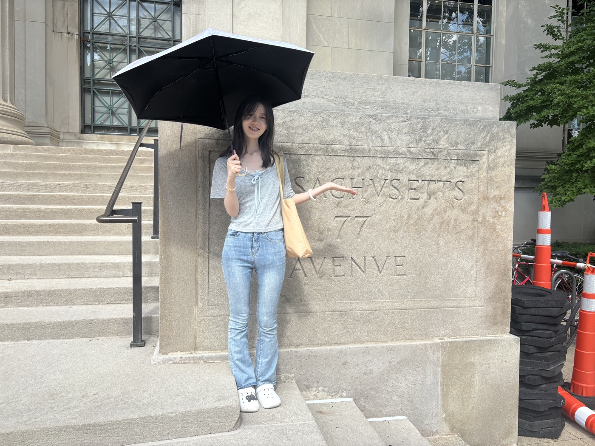
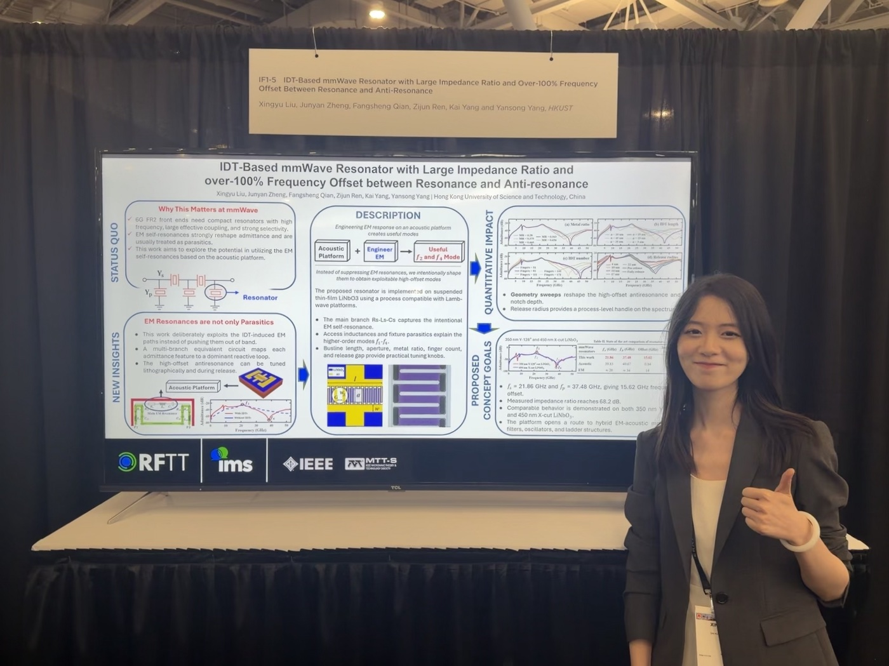
2026
IEEE NEMS
IEEE International Conference on Nano/Micro Engineered and Molecular Systems · Chengdu, China
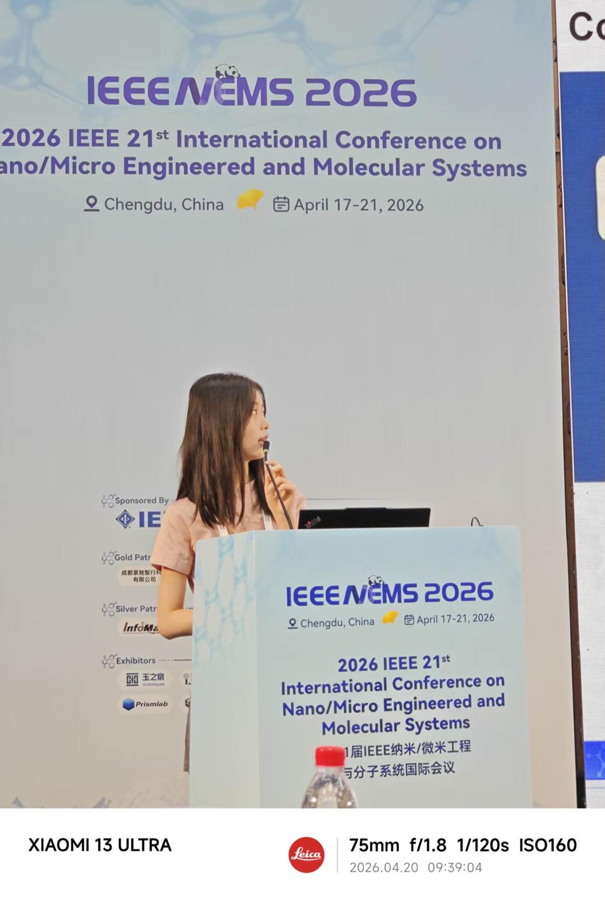
2026
IEEE MEMS
IEEE International Conference on Micro Electro Mechanical Systems · Salzburg, Austria
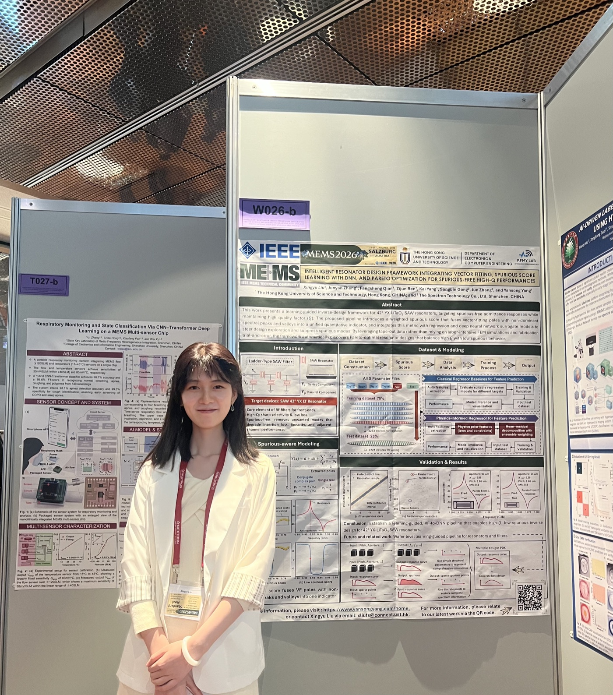
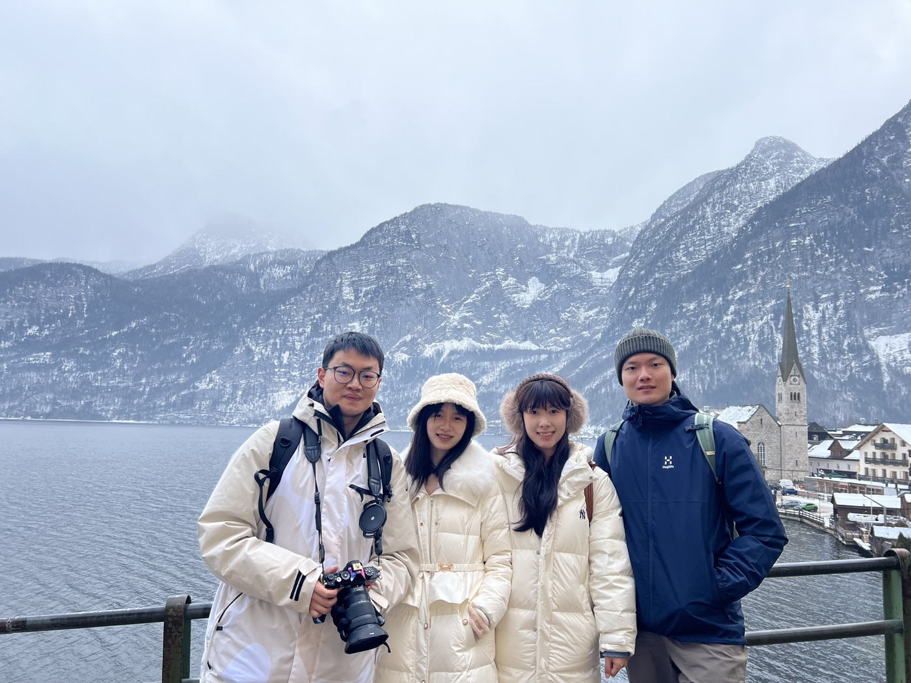
2025
IEEE IUS
IEEE International Ultrasonics Symposium · Utrecht, Netherlands
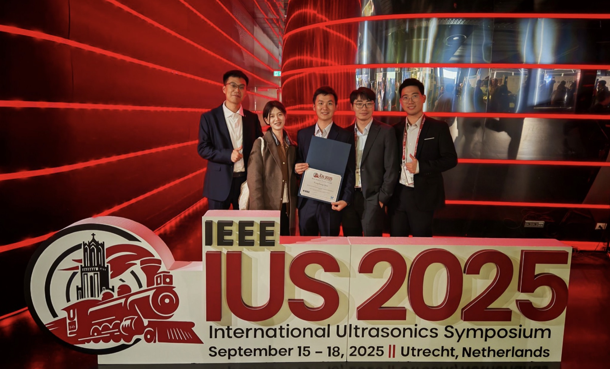
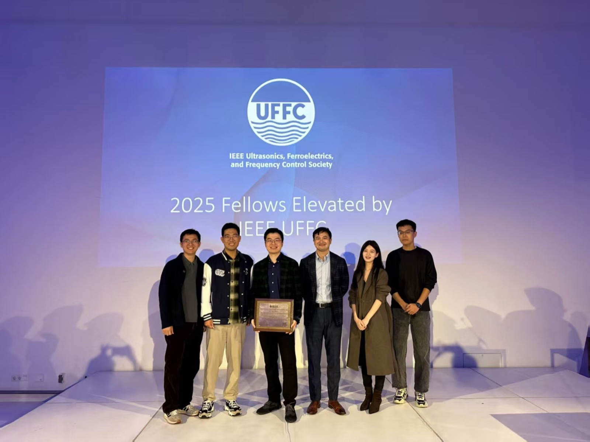
2024
IEEE IUS / UFFC-JS
IEEE Ultrasonics, Ferroelectrics, and Frequency Control Joint Symposium · Taipei, Taiwan
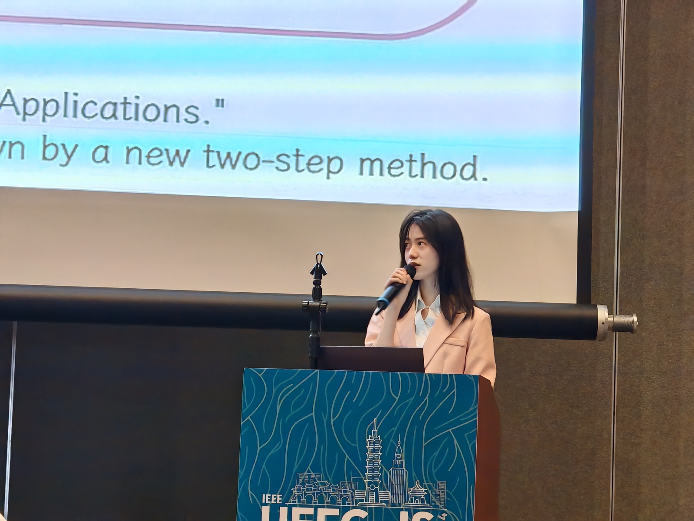
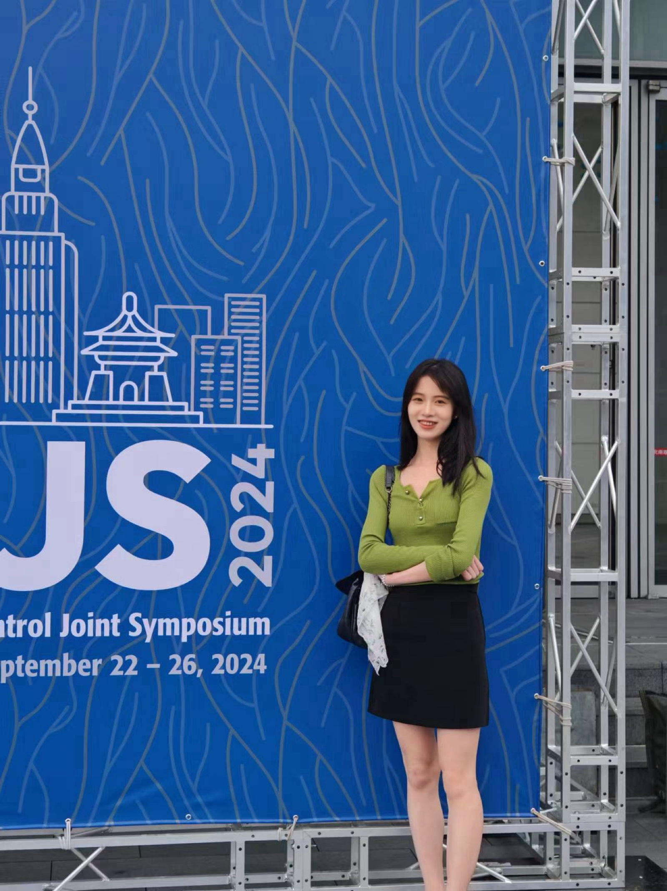
2023
IEEE ISAP
International Symposium on Antennas and Propagation · Kuala Lumpur, Malaysia
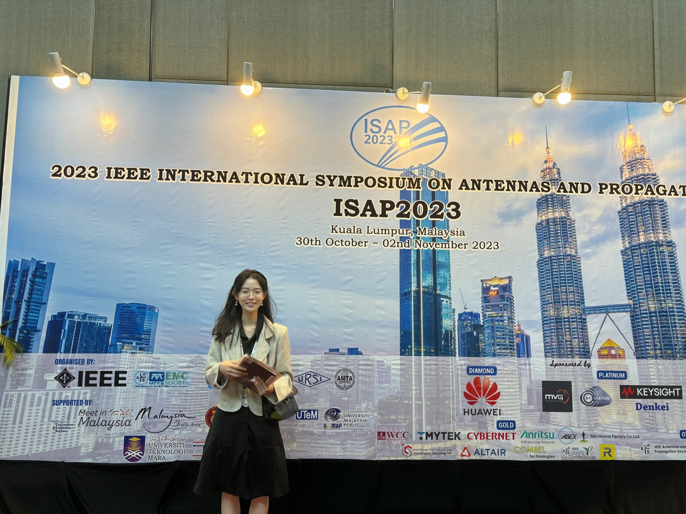
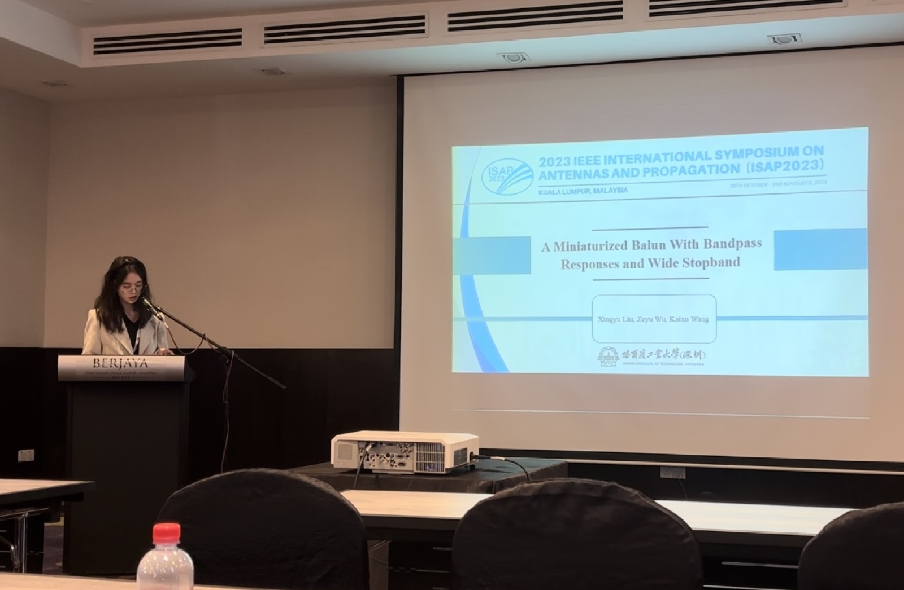